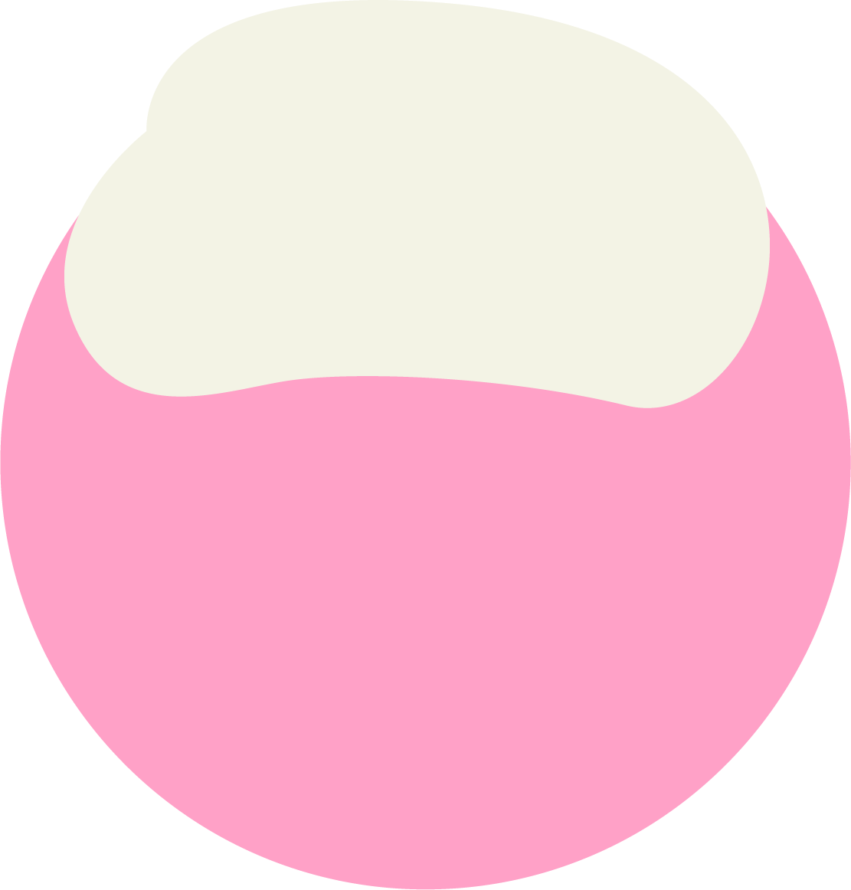

ขนมพระพาย


ขนมพระพาย ขนมที่มีมาอย่างช้า
นานตั้งแต่สมัยกรุงศรีอยุธยาเป็น
ที่นิยมมากในสมัยก่อน บริเวณภาค
กลางของประเทศไทย
นานตั้งแต่สมัยกรุงศรีอยุธยาเป็น
ที่นิยมมากในสมัยก่อน บริเวณภาค
กลางของประเทศไทย

ขุนพิทักษ์ราชกิจ ขุนทหารคู่ใจสมเด็จ
พระเพทราชาได้รับการอวยยศเป็นพระ
พิทักษ์ราชกิจได้จัดพิธีแต่งงงานขึ้นเหล่า
ชาววิเสทซึ่งมักคุ้นกับพระพิทักษ์ราชกิจ
มาเพื่อใข้ในพิธีแต่งงานโดยเฉพาะ

พระเพทราชาได้รับการอวยยศเป็นพระ
พิทักษ์ราชกิจได้จัดพิธีแต่งงงานขึ้นเหล่า
ชาววิเสทซึ่งมักคุ้นกับพระพิทักษ์ราชกิจ
มาเพื่อใข้ในพิธีแต่งงานโดยเฉพาะ


ความเชื่อ
ของขนมพระพาย
ของขนมพระพาย

มักการแต่งงานในสมัยโบราณ
การเฉลิมฉลองชีวิตคู่ให้สดใส
การเฉลิมฉลองชีวิตคู่ให้สดใส

วัตถุดิบ


พระพายถูกคิดขึ้นเพื่อ
งานแต่งเหมือนสี่ถ้วยเลย

แป้งข้าวเหนียวคือความเหนียว
แน่นมั่นคง
ไส้คือความรักอันแสนหวาน
ไส้ล่ะ
เดี๋ยวนะ ทำไมขนมพระพาย
ถึงเริ่มเปลี่ยนไปกันล่ะ
สังขารนั้นไม่เที่ยงฉันใด
ขนมก็เป็นฉันนั้น
แม้รูปร่างนั้นดูง่ายดาย
แต่มีขึ้นก็ต้องมีลง
แย่แล้วขนมพระพาย
เปลี่ยนไปเรื่อย ๆ เลย
งั้นเรามาดูสาเหตุ
ของการเปลี่ยนแปลงนี้ดีกว่า

แป้งข้าวเหนียว
แป้งข้าวเจ้า
น้ำคั้นใบเตย

ถั่วเขียวเลาะเปลือก

กะทิ

น้ำตาลทราย

ทำไมถึง
เริ่มเลือนราง
ทำขายค่อนข้างยากในเรื่องบรรจุภัณฑ์ที่เวลาทานต้องเอาวางไว้บนใบตองตัดเป็น
วงกลมแล้วราดน้ำกะทิ นิ่งแล้วต้องทานเลยเพราะทิ้งไว้ผิวแป้งจะแห้งและแข็งตัวไม่
นุ่มเหมือนตอนทำใหม่ๆ และใช้เวลาทำค่อนข้างมาก จึงไม่นิยมขาย อีกทั้งในแง่ขั้น
ตอนก็มีความนิยมนั้นสวนทางกัน
ทำยากความต้องการน้อย


ขนมหม้อตาล


"ขนมหม้อตาล" ขนมหวานไทยโบราณที่จัดอยู่ใน
หมวดชาววัง ซึ่งได้รับอิทธิพลจากการนำเข้ามา
ของชาวจีน ทำให้ขนมนี้เป็นที่นิยมในหมู่ชุมชนชาว
ไทยเชื้อสายจีน หรือคนจีนที่เข้ามาติดต่อค้าขาย


ลึกลงไปในมหาสมุทร ...


ปรากฏหม้อตาลจำนวนมากปะปนอยู่กับเครื่องถ้วยอื่น ๆ
ด้วยขนมหม้อตาลนั้นเป็นที่นิยมอย่างมากในชุมชนเพชรบุรี
นับว่าเป็นมรดกทางวัฒนธรรมที่สำคัญของชุมชนหม้อจาก
เมืองเพชรบุรี

จากหลักฐานการค้นพบนั้นขนมหม้อตาลมีหลักฐาน
มาจาก "หม้อตาล" ที่มีความนิยมอย่างมากในสมัย
อยุธยาโดยอ้างอิงจากเรือสำเภาสินค้าสมัยอยุธยา
ซึ่งจมอยู่แถวเกาะกระดาด บริเวณอ่าวไทยฟาก
ตะวันออก


Press Me !
ความเชื่อของ
ขนมหม้อตาล
คนไทยสมัยก่อน นิยมใช้ในพิธี
มงคลสมรสโดยจะเรียก ขนมหม้อ
ตาลว่า ขนมหม้อเงิน หม้อทอง นิยม
นำมาใช้ในพิธีแต่งงานสำหรับคนจีน
มีความเชื่อว่าจะทำให้เกิดความ
มั่งคั่งร่ำรวย ชีวิตคู่ สะดวกสบาย
หยิบจับสิ่งใดเป็นทอง


โห...กินแล้วรวยมั้ยชื่อ
จริงดูมีราศีจัง

แต่เธอก็ชื่อทองหยอดนะ

เขากินเธอแล้วรวยบ้างไหม


เอ๊อะ...นั่นสินะ


วัตถุดิบ

แป้งสาลี

ไข่แดง

เกลือ

น้ำมันพืช

น้ำ

น้ำตาลไอซิ่ง


สีผสมอาหาร


รวมร่าง!!!!!!!!!!!
ทำไมถึง
เลือนราง
วิธีการทำซับซ้อนเกินไปทำให้ไม่นิยมในการรับ
ประทานแก่ชนชั้นกลางในสมัยก่อน นิยม
เพียงในวงแคบอย่างชาววัง ทำให้การเผยแพร่
ไม่วงกว้างนัก
อีกทั้ง...
ตั้งแต่ช่วงปลายทศวรรษ 2480 เป็นต้นมา
ปี๊ปสังกะสี ปี๊ปน้ำมันก๊าดได้เข้าสู่สังคมไทย
ทำให้มีการนำมาใช้บรรจุสิ่งของต่างๆ จึง
ทำให้หม้อตาลเมืองเพรช ถึงไม่ได้เป็นที่นิยม
และต้องการของตลาดเหมือนครั้งอดีต